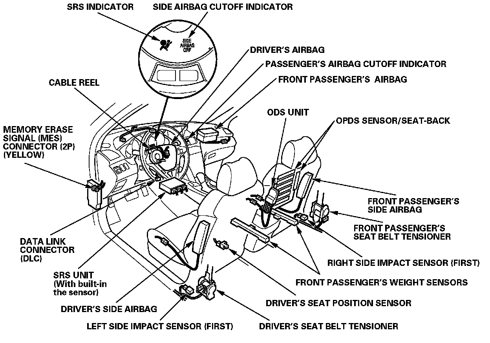
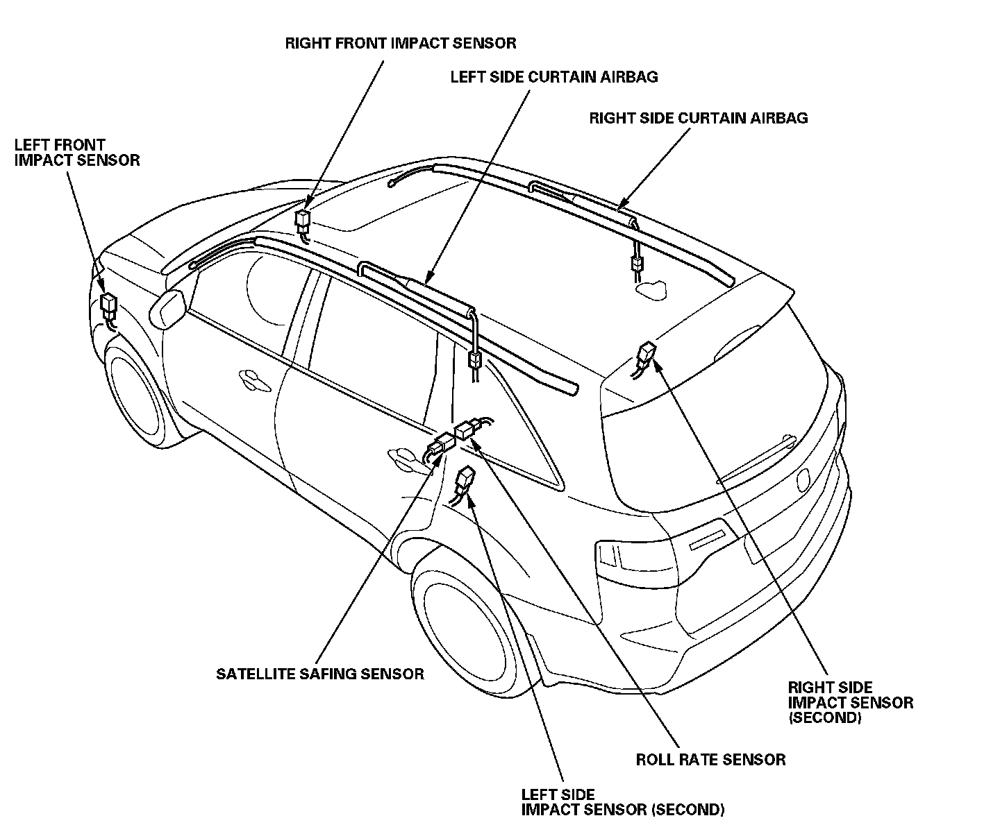

Supplemental Restraint System (SRS)
General InformationSupplemental Restraint System (SRS)
This model has an SRS which includes a driver's airbag in the steering wheel hub, a passenger's airbag in the dashboard above the glove box, seat belt tensioners in the front seat belt retractors, side airbags in the front seat-backs, and side curtain airbags in the sides of the roof. The SRS unit is separate from the airbag assembly and has built-in sensors. The following precautions should be observed when doing sheet metal work, paint work, and repair work around the locations of the SRS components.
- The SRS unit (including the safing sensor and the impact sensor) is located under the dashboard and the side impact sensors are located in each side sill and rear wheel arch. The front impact sensors are located behind the right and left ends of the front bumper. Avoid any strong impact with a hammer or other tools when repairing the front side frame, the lower part of the dashboard, the side sill, and rear wheel arch. Do not apply heat to these areas with a torch, etc.
- Take extra care when painting or doing body work in the area below the center pillar. Do not expose the seat belt retractor and tensioner to heat guns, welding, or spraying equipment.
- SRS electrical wiring harnesses and connectors are identified with yellow color coding. Take care when repairing this area. Prevent damage to the harness.
- Do not apply heat of more than 212° F (100° C) when drying painted surfaces anywhere around the SRS components locations.
- If strong impact or high temperature need to be applied to the areas around the locations of SRS components, remove the components before doing the repair work.
- If any of the SRS related components are damaged or deformed, be sure to replace them.
NOTE: Refer to the Restraint Systems for the appropriate after-deployment procedures and removal and replacement of SRS related components.

